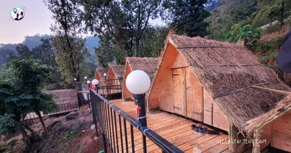

We have a deep connection to villages and the village lifestyle. As a kid, we never got bored of coming home after the last exam paper only to start packing and to leave for village without wasting a single second. But every good things ends and so did our childhood. Sigh! We grew up and started slogging in the workplaces till the hour hand and minute hand started to disappear slowly. We engross ourselves in office work and forget about our personal life completely. But here is a chance to re-live and re-visit our childhood experience again. Village Outing or (Patalache Gaav or Patil’s Village) has presented this amazing opportunity of camping near Pune to people like us.
|  | Pay only Rs. 500/ person as an advance and the remaining amount you can pay at campsite. |
| Cottage camping near Pune and Mumbai is a dream activity of many adventure seekers. We recently upgraded our campground and added 10 wooden cottages on machan. The cottages are comfortable in rainy season and having capacity of 3 to 4 people at a time. |  |